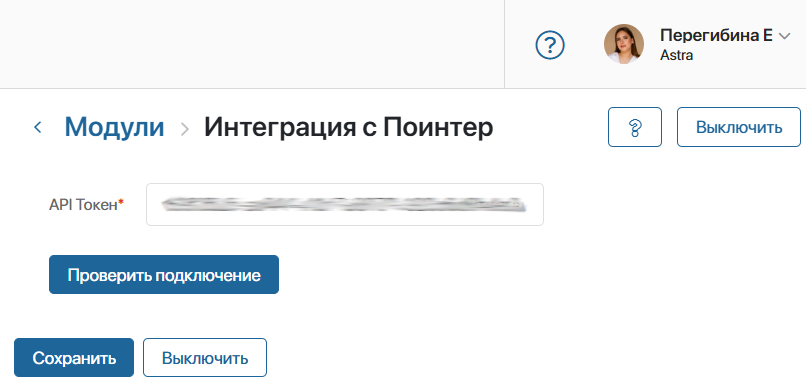
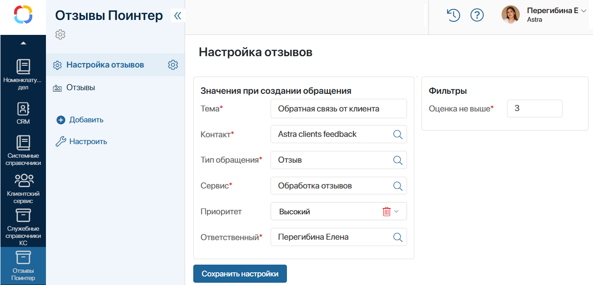

Начало внимание
Устанавливать и настраивать решение может только администратор системы.
Конец внимание
Чтобы настроить интеграцию с Поинтер, выполните следующие шаги:
- Предварительно зарегистрируйтесь и создайте личный кабинет в сервисе Поинтер. Затем получите API-токен сервиса. Для этого обратитесь в техподдержку Поинтер.
- Установите решение «Отзывы Pointer» в ELMA365.
- Настройте модуль «Интеграция с Поинтер».
- Заполните справочники раздела «Клиентский сервис» и создайте записи, необходимые при настройке формы обращения.
- В разделе CRM > Контакты добавьте запись для корректной обработки отзывов без использования данных клиента.
- На странице Отзывы Поинтер > Настройка отзывов введите сведения для автоматического заполнения формы обращения при поступлении в раздел Клиентский сервис.
Установить решение «Отзывы Pointer»
Загрузите решение из ELMA365 Store. Для этого:
- Перейдите в раздел Администрирование > Решения и в правом верхнем углу нажмите кнопку + Решение.
- В открывшемся окне выберите Скачать и перейдите в каталог ELMA365 Store.
- Найдите в каталоге решение Отзывы Pointer и нажмите кнопку Попробовать бесплатно.
- Дождитесь окончания проверки и установки. В систему добавится модуль Интеграция с Поинтер и раздел Отзывы Поинтер.
Подробнее о загрузке решений читайте в статье «Импорт решения из ELMA365 Store».
После бесплатного периода для работы с решением его нужно активировать. Для этого:
- Перейдите в раздел Администрирование > Управление лицензиями и в карточке решения Отзывы Pointer нажмите кнопку Активировать.
- Скопируйте регистрационный токен решения и передайте его менеджеру ELMA365.
- Вставьте полученный ключ активации в соответствующее поле и нажмите кнопку Активировать.
Подробнее читайте в статье «Лицензии ELMA365 Store».
Настроить модуль «Интеграция с Поинтер»
Чтобы подключить интеграцию с сервисом мониторинга отзывов Поинтер:
- Перейдите в раздел Администрирование > Модули.
- Откройте карточку модуля Интеграция с Поинтер и нажмите кнопку Включить.
- В открывшемся окне в поле API Токен* вставьте токен сервиса Поинтер.

- Проверьте подключение, нажав соответствующую кнопку.
- Сохраните настройки.
Заполнить справочники раздела «Клиентский сервис» для работы с Поинтер
Для обработки отзывов из Поинтер используются записи из следующих справочников раздела Клиентский сервис:
- Типы обращений — создайте категорию, к которой будут относиться обращения-отзывы;
- Сервисы — создайте услугу, в рамках которой оператор будет работать с отзывами.
Эти данные укажите при настройке формы обращения в разделе Отзывы Поинтер.
Создать контакт для отзывов из Поинтер
При подключённой интеграции отзывы из сервиса Поинтер передаются в ELMA365, и в разделе Отзывы Поинтер > Отзывы создаются соответствующие записи.
Чтобы обращения добавлялись в раздел Клиентский сервис и операторы могли их обрабатывать, нужны контактные данные клиента. В отзыве из Поинтер в качестве контактов, обязательных для создания обращения, используется ID.
Для корректного формирования обращений:
- В разделе CRM > Контакты создайте контакт.
- Укажите его на странице Настройка отзывов.
Настроить доступ к разделу «Отзывы Поинтер»
По умолчанию у всех пользователей системы есть доступ к разделу Отзывы Поинтер и его приложениям.
Вы можете ограничить доступ на уровне раздела, приложения и данных приложения. Подробнее читайте в разделе «Система прав доступа в ELMA365».
Настроить форму обращения для отзыва из Поинтер
При поступлении отзыва из Поинтер в ELMA365 в разделе Клиентский сервис > Обращения создаётся элемент приложения. Для корректной работы задайте значения полей, которые автоматически заполнятся в карточке обращения.
В поступившем обращении будут указаны тема, тип, сервис, приоритет и другие параметры. Изменяется только текст отзыва клиента.
Для этого:
- Перейдите на страницу Отзывы Поинтер > Настройка отзывов.
- Заполните поля в блоке Значения при создании обращения:

- Тема* — введите краткое описание, по которому операторы определяют содержание обращения;
- Контакт* — выберите специальный контакт для отзывов из справочника CRM > Контакты;
- Тип обращения* — выберите категорию для отзыва из справочника Типы обращений;
- Сервис* — выберите услугу, к которой относится отзыв, из справочника Сервисы;
- Приоритет — задайте уровень приоритета для обращений данного типа;
- Ответственный* — назначьте сотрудника для обработки отзывов.
- В блоке Фильтры задайте оценку из отзыва клиента. Отзывы с указанной оценкой и ниже будут передаваться из Поинтер в ELMA365. Чтобы реагировать только на негативные отзывы, установите среднюю или низкую оценку. Для получения всех отзывов укажите максимальную оценку.
- Нажмите Сохранить настройки.
Теперь вы можете получать обращения с обратной связью от клиентов из сторонних сервисов в раздел Клиентский сервис > Обращения, и операторы будут обрабатывать их. Принятое сотрудником решение автоматически отправится в качестве ответа на отзыв.